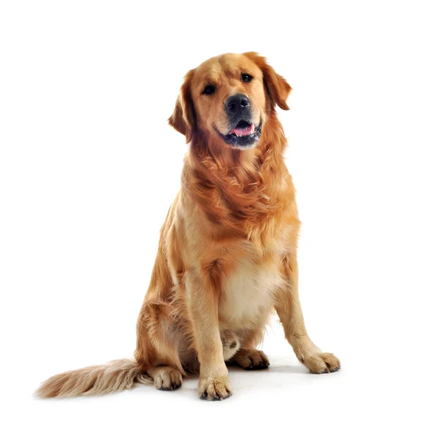
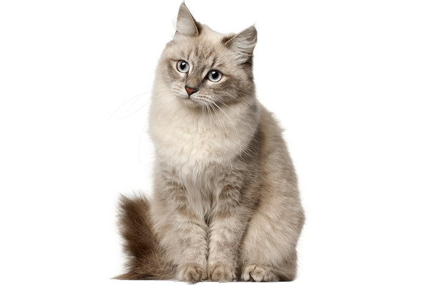
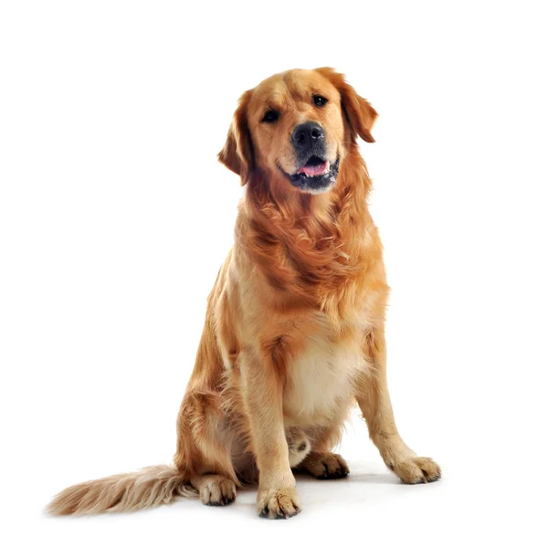
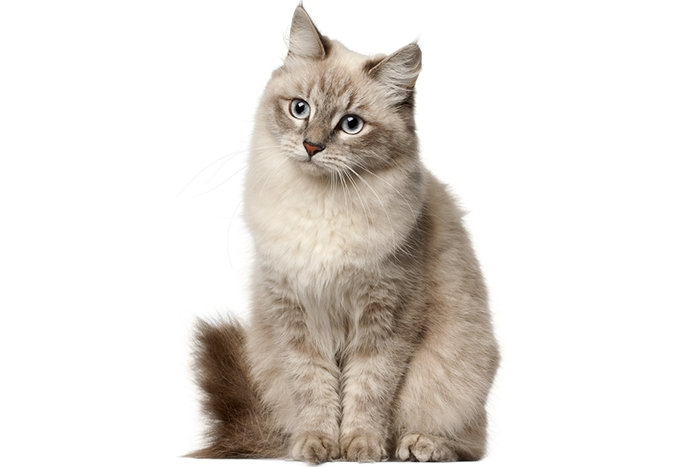
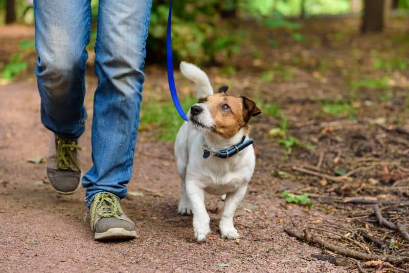
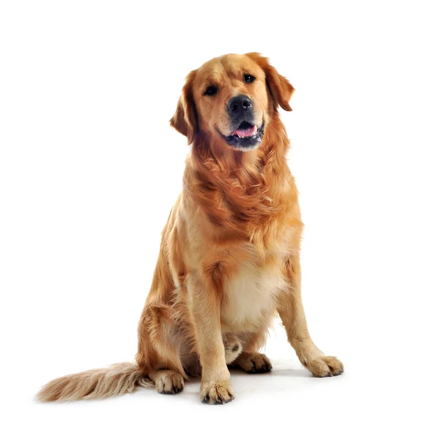
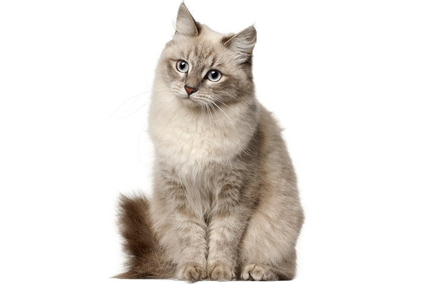

Fotky našich svěřenců
 



Vítejte na stránkách útulku PAW PAW. Pomáháme opuštěným zvířatům a hledáme jim nový domov!
Jsme bezpečným místem pro opuštěné, týrané a zatoulané psy a kočky. Každý den se snažíme zvířatům poskytnout péči, lásku a šanci na nový domov.
Navštivte nás a vyberte si nového chlupatého parťáka. Pomoci můžete i jako dobrovolník nebo darem. Děkujeme! 🐶🐱



Každý den od 8:00 do 16:00 máte možnost přijít a vzít naše pejsky na procházku. Vhodné pro každého nad 15 let (mladší s doprovodem dospělého).
🐱 Míša – Elegantní černá královna (2 roky, kastrovaná)
🐶 Max – Aktivní a oddaný pes (3 roky, čipovaný)
🐱 Oliver – Roztomilý zrzavý uličník (1 rok, hravý)
Máte zájem o adopci? Zavolejte nám nebo nám napište na e-mail.
📞 +420 723 831 012
📧 pawpaw@seznam.cz
📍 Průmyslová 713, 686 01 Uherské Hradiště
Jan Novák – Ředitel útulku
Anna Nováková – Koordinátorka adopcí
Petr Dvořák – Vychovatel psů